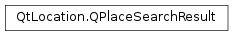

QPlaceSearchResult¶
Inherited by: QPlaceResult, QPlaceProposedSearchResult
Synopsis¶
Detailed Description¶
The
PySide2.QtLocation.QPlaceSearchResultclass is the base class for search results.A list of search results can be retrieved from the
PySide2.QtLocation.QPlaceSearchReplyafter it has successfully completed the request. Common to all search results are thePySide2.QtLocation.QPlaceSearchResult.title()andPySide2.QtLocation.QPlaceSearchResult.icon(), which can be used to present the search result to the user.The intended usage is that depending on the
PySide2.QtLocation.QPlaceSearchResult.type(), the search result can be converted to a more detailed subclass like so:if (result.type() == QPlaceSearchResult::PlaceResult) { QPlaceResult placeResult = result; qDebug() << placeResult.place().name(); qDebug() << placeResult.place().location().coordinate(); qDebug() << placeResult.distance(); }The implementation is handled in such a way that object slicing is not an issue. It is not expected that client applications or backend plugins instantiate a
PySide2.QtLocation.QPlaceSearchResultdirectly, but rather client applications simply convert to search result subclasses and backend plugins only instantiate subclasses.See also
-
class
PySide2.QtLocation.QPlaceSearchResult¶ -
class
PySide2.QtLocation.QPlaceSearchResult(other) Parameters: other – PySide2.QtLocation.QPlaceSearchResultConstructs a new search result.
Constructs a copy of
other
-
PySide2.QtLocation.QPlaceSearchResult.icon()¶ Return type: PySide2.QtLocation.QPlaceIconReturns an icon that can be used to represent the search result.
-
PySide2.QtLocation.QPlaceSearchResult.__ne__(other)¶ Parameters: other – PySide2.QtLocation.QPlaceSearchResultReturn type: PySide2.QtCore.boolReturns true if
othernot equal to this search result, otherwise returns false.
-
PySide2.QtLocation.QPlaceSearchResult.__eq__(other)¶ Parameters: other – PySide2.QtLocation.QPlaceSearchResultReturn type: PySide2.QtCore.boolReturns true if
otheris equal to this search result, otherwise returns false.
-
PySide2.QtLocation.QPlaceSearchResult.setIcon(icon)¶ Parameters: icon – PySide2.QtLocation.QPlaceIconSets the icon of the search result to
icon.
-
PySide2.QtLocation.QPlaceSearchResult.setTitle(title)¶ Parameters: title – unicode Sets the title of the search result to
title.
-
PySide2.QtLocation.QPlaceSearchResult.title()¶ Return type: unicode Returns the title of the search result. This string can be used to display the search result to the user.
© 2018 The Qt Company Ltd. Documentation contributions included herein are the copyrights of their respective owners. The documentation provided herein is licensed under the terms of the GNU Free Documentation License version 1.3 as published by the Free Software Foundation. Qt and respective logos are trademarks of The Qt Company Ltd. in Finland and/or other countries worldwide. All other trademarks are property of their respective owners.